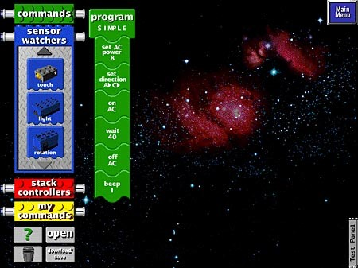

Обзор робототехнического конструктора LEGO Mindstorms
LEGO Mindstorms – робототехнический конструктор для создания программируемого автоматизированного устройства. Компания Lego основана в 1932 году, как компания производящая игрушки для детей. В 1980 году компаний было основано подразделение LEGO Education, специализирующееся на производстве обучающих игрушек. Замечательная особенность Lego-педагогики – быстрый старт при реализации проектов
Конструктор Lego Mindstorms состоит из:
- блока управления, для хранения и выполнения хранимых программ;
- монолитных деталей, для конструирования корпуса для робота;
- датчиков, для регистрации сигналов;
- шлейфов, для передачи данных;
- сервомоторов, Для обеспечения возможности движения робота.
Первый конструктор LEGO Mindstorms, разработанный LEGO Education появился в 1998 под маркой Lego Mindstorm RCX. Блок управления Lego Mindstorm RCX назывался Renesas (Hitachi) H8/300, имеет тактовую частоту 16 Мгц, с 16-битной адресной шиной. Для подключения датчиков на блоке находится три входа с двумя контактами на каждом и три выхода для подключения сервомоторов. Для отображения информации блок имеет символьный LCD дисплей, состоящий из 43 сегментов.
Блок управления Lego Mindstorm RCX.
Для программирования блока управления Lego Mindstorm RCX используется среда разработки, называемая RCX Code Graphic programing environment. Программирование представляет из себя создание блок схем по управлению роботом.

Интерфейс среды разработки RCX Code Graphic programing environment.
Для установки RCX Code Graphic programing environment на персональный компьютер необходимо иметь предустановленную ОС Windows 98. LEGO Mindstorms NXT 1.0 появился в 2006 году, а позже в 2009 появилась его модификация LEGO Mindstorms NXT 2.0. Блок управления LEGO Mindstorms NXT оснащен процессором Atmel 32-Bit ARM, имеющем тактовую частоту 48 Мгц., 256 Кб. Flash памяти, и 64 Kб. оперативной памяти. Блок работает под управлением собственной операционной системы. Для подключения датчиков на блоке предусмотрено 4 шестижильных порта с для коннекторов RJ-9 и три порта для подключения моторов. В LEGO Mindstorms NXT есть возможность удаленного управления блоком через Bluetooth при помощи устройства с операционной системой Android и IOS. Для отображения информации блок имеет черно-белый жидкокристаллический матричный дисплей с разрешением 100 x 64 пикселей. Для подключения к персональному компьютеру блок оснащен USB портом.

Блок управления Lego Mindstorms NXT.
В комплекте с блоком в конструкторе имеются монолитные детали, два мотора и датчики:
- датчик освещенности;
- датчик звука;
- датчик касания;
- датчик ультразвука.
Для программирования блока управления Lego Mindstorm NXT используется среда разработки, называемая NXT Programming. Как и в среда разработки RCX Code Graphic programing environment программирование представляет из себя создание блок схем по управлению роботом.
Интерфейс среды разработки NXT Programming.
Кроме возможностей программирования NXT Programming снабжена вводным курсом, объясняющим основное назначение отдельных блоков. LEGO Mindstorms EV3 появился в 2013 году Блок управления LEGO Mindstorms EV3 оснащен процессором ARM9, имеющем тактовую частоту 300 Мгц, 16 Мб. Flash памяти, и 64 Мб оперативной памяти. Блок работает под управлением операционной системы Linux. Для подключения датчиков на блоке предусмотрено 4 шестижильных порта с для коннекторов RJ-9 и четыре порта для подключения моторов. В LEGO Mindstorms EV3 есть возможность удаленного управления блоком через Bluetooth при помощи устройства с операционной системой Android и IOS. Для отображения информации блок имеет черно-белый жидкокристаллический матричный дисплей с разрешением 178 x 128 пикселей. Для подключения к персональному компьютеру блок оснащен USB портом.
Блок управления Lego Mindstorms EV3.
В комплекте с блоком в конструкторе имеются монолитные детали, два больших мотора, один малый мотор и датчики:
- датчик освещенности;
- датчик звука;
- датчик касания;
- датчик ультразвука;
- гироскоп.
Помимо датчиков, входящих в домашний или образовательный комплекты Lego Mindstorms EV3, существует возможность дополнительного приобретения датчиков Lego и сертифицированных Lego датчиков компании HiTechnic [23]. Для программирования блока управления Lego Mindstorm EV3 используется среда разработки, называемая LEGO MINDSTORMS Education EV3. Как и в предыдущих версиях программирование осуществляется через создание блок схем.

Интерфейс среды разработки LEGO MINDSTORMS Education EV3.
Для моделей NXT И EV3 кроме стандартных сред программирования существую различный языки программирования написанные сторонними производителями. Например:
- RobotC, Основанный на языке C, и имеющий собственный компилятор:
- leJOS, основанный на языке Java, встраиваемый в любой компилятор Java.
Робототехнические конструкторы Lego Mindstorms NXT и LEGO Mindstorms EV3 поддерживают многопоточное программирование.
Для робототехнических конструкторов LEGO Mindstorms существуют как учебно-методические комплексы, поставляемые с набором, так и учебно-методические комплексы сторонних производителей.
Учебно-методические комплексы, поставляемые с набором представляют собой обучение основам робототехнике внутри сред разработки. Они содержат практические примеры основного применения датчиков, и описания их программ. Так же каждое учебное пособие снабжено видеоматериалами, демонстрирующими возможности конструктора. Минусами учебно-методических комплексов, поставляемых с наборами являются их малая теоретическая база, описывающая принципы робототехники, что усложняет переход от моделирования посредствам робототехнических конструкторов LEGO Mindstorms к моделированию на других робототехнических устройствах.
Учебно-методическими комплексами сторонних производителей наиболее полно описывающие возможности робототехнического конструктора LEGO Mindstorms являются:
1. Учебные пособия 5-8 класс. «Технология. Робототехника.»
2. Учебное пособие «Большая книга LEGO Mindstorms EV3»
Учебное пособие по технологии автора Д.Г. Копосова представляя собой комплект из 4 учебников, содержащие как теоретическую, так и практическую часть обучения робототехнике. Данный комплекс одобрен ФГОС и по нему разрешено преподавать в учебных заведениях России. Минусами данного комплекса являются мало материала по практическому сбору и программированию моделей. Практика начинается только с 8 класса, что занимает ¼ от общего объема комплекса.
Большая книга LEGO Mindstorms EV3 автора Лоренса Вака содержит практические примеры моделей на базе робототехнического конструктора LEGO Mindstorms. Минусами данного конструктора являются, малая теоретическая база по робототехнике и небольшой объём комплекса.